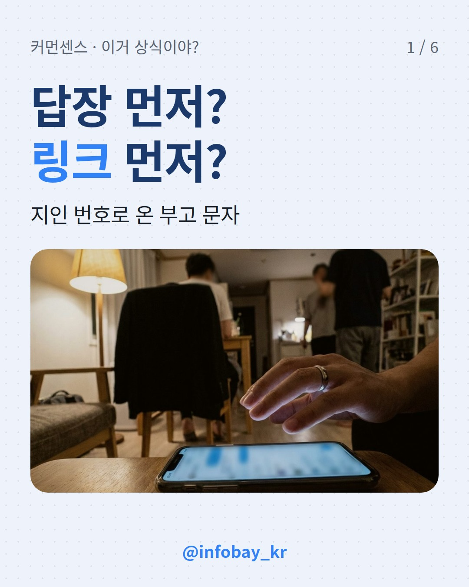

지인 번호로 부고 문자가 왔는데 링크부터 눌러야 할지, 답장은 뭐라고 해야 할지 막막하다면 이 글을 보세요.
한 줄 결론: 링크는 누르기 전에 상주나 공통 지인에게 전화로 확인하세요. 답장은 관계에 맞춰 두세 문장이면 충분해요. 이미 눌렀다면 비행기 모드를 켜고 118에 상담하세요.
아는 번호로 왔더라도 바로 누르면 안 돼요. 2023년 경찰청은 부고 사칭 스미싱이 기존 수법과 달리 아는 사람 번호로 온다며 주의를 당부했어요. 링크를 누른 사람의 휴대폰이 감염되면 그 폰에 저장된 연락처로 같은 부고 문자가 다시 퍼져요.
서울의 한 경찰관도 새벽에 온 부고 링크를 눌렀다가 자기 이름으로 된 부고가 지인들에게 발송됐어요. 지인 1000여 명에게 일일이 해명해야 했다고 해요. 안랩도 2026년 1분기 보고서에서 부고·청첩장처럼 확인을 재촉하는 문자는 링크를 누르지 말고 공식 경로로 먼저 확인하라고 안내했어요.
법원이 금융사가 본인 확인 절차를 모두 거쳤다고 봤기 때문이에요. 2026년 9월 전주지법 판결(2026나1008)의 흐름은 이래요.
피해자는 대출이 무효라며 소송을 냈지만 졌어요. 금융사가 신분증 진위 확인, 1원 이체 인증, 휴대폰 본인인증, 공동인증서 서명을 모두 거쳤다는 이유였어요.
이 판결이 모든 사건에 똑같이 적용되지는 않아요. 2019년 서울중앙지법은 휴대폰 본인인증만 거친 비대면 대출을 무효로 본 적이 있어요. 결과는 금융사가 어떤 인증 절차를 거쳤는지에 따라 달라지니, 실제로 피해를 입었다면 금융감독원(1332)이나 변호사와 꼭 상담하세요.
링크를 누르지 않고 사람에게 직접 물어보는 게 가장 확실해요. 진짜 부고 문자에도 링크가 들어 있는 경우가 많아서 링크가 있는지만 보고는 가려낼 수 없어요.
| 확인 방법 | 이럴 때 | 메모 |
|---|---|---|
| 보낸 사람에게 전화 | 가까운 사이 | 가장 빠르고 확실해요 |
| 공통 지인·단톡방 확인 | 상주와 덜 친할 때 | 회사라면 사내 공지를 보세요 |
| 본문에 빈소·발인 정보가 있는지 | 링크만 덩그러니 온 문자 | 정보가 없으면 한 번 더 의심하세요 |
| 118 문의 | 판단이 안 설 때 | 한국인터넷진흥원, 24시간 무료 |

답장은 위로 한 문장, 조문 계획이나 마음 한 문장이면 충분해요.
| 관계 | 예문 |
|---|---|
| 친한 친구 | ○○아, 지금 소식 들었어. 내일 퇴근하고 바로 갈게. 밥은 꼭 챙겨 먹어. |
| 직장 동료 | ○○님, 갑작스러운 소식에 마음이 무겁습니다. 업무는 팀에서 나눠 볼 테니 가족 곁에 계세요. |
| 상사 | 팀장님, 삼가 고인의 명복을 빕니다. 내일 저녁에 조문 가서 인사드리겠습니다. |
| 거래처 | ○○님, 부친상 소식 들었습니다. 삼가 고인의 명복을 빕니다. 경황이 없으실 테니 회신은 괜찮습니다. |
| 조문을 못 갈 때 | 직접 찾아뵙지 못해 죄송합니다. 멀리서나마 고인의 명복을 빕니다. 돌아오시면 따로 연락드릴게요. |
| 오랜만에 연락 온 지인 | ○○아, 오랜만에 이런 소식으로 연락받아 마음이 아프다. 부의는 계좌로 보낼게. 잘 보내드려. |
친구라면 '빈소 어디야?'라고 물어도 돼요. 위로도 되고 진짜 부고인지도 확인할 수 있어요. 사인을 묻는 말, '호상이네요', '이제 편하시겠다' 같은 말은 빼세요. 봉투 적는 법은 부조봉투 쓰는법, '삼가 고인의 명복을 빕니다'는 봉투에 안 써요에 정리해 뒀어요.
일단 휴대폰부터 인터넷에서 끊어야 해요. 아래 순서를 따라 하세요(2026년 11월 기준).
다음부터는 설정 → 보안 및 개인정보 보호 → 출처를 알 수 없는 앱 설치 → 모두 허용 안 함으로 바꿔 두세요. 메뉴 이름은 기종마다 조금씩 달라요.

| 상황 | 할 일 |
|---|---|
| 아는 번호로 부고 링크가 옴 | 누르기 전에 전화나 공통 지인으로 확인 |
| 진짜 부고로 확인됨 | 관계에 맞춰 두세 문장으로 답장 |
| 조문을 못 감 | 사과 한 문장과 위로를 보내고 부의는 계좌로 |
| 링크를 이미 누름 | 비행기 모드 → 118 → 금융사 → 엠세이퍼 → 노출자 등록 |
| 돈이 빠져나감 | 112 신고, 금감원 1332 상담 |
Q. 링크만 열고 아무것도 설치하지 않았으면 괜찮나요?
KISA는 링크를 누른 뒤 동의·설치까지 했다면 감염 가능성이 크다고 안내해요. 설치를 안 했어도 불안하면 118에 물어보는 게 가장 정확해요.
Q. 답장을 안 하면 실례인가요?
정해진 규칙은 없어요. 다만 조문을 못 간다면 짧게라도 답장하는 편이 관계에는 덜 서운해요. 조의금 액수는 조의금 5만원 vs 10만원? 설문 1위와 성균관 권고가 다른 이유를 참고하세요.
Q. 빈소에 가면 어떻게 하나요?
절 횟수와 인사말은 장례식 조문 예절 실수 6가지, 절은 영정 2번·상주 1번에 따로 정리해 뒀어요.
지금 사진첩에서 신분증 사진부터 찾아보세요. 부고가 오면 답장부터 하는지, 확인 전화부터 하는지, 커먼센스에서 이 상황, 당신은?
2026년 11월 기준, 법원 판결 보도와 한국인터넷진흥원·경찰청 안내 자료를 확인해 작성했어요.